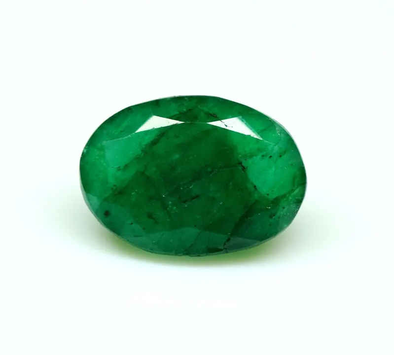
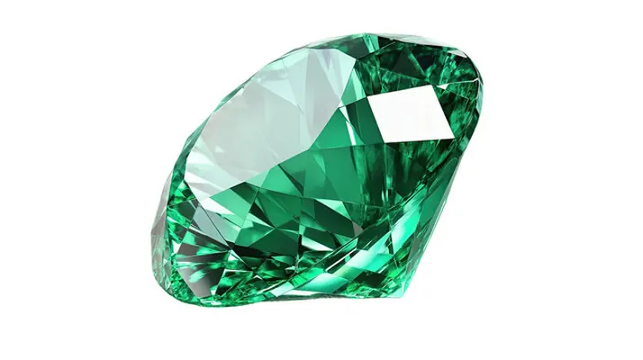

祖母綠總論：比鑽石更貴的綠色奇蹟
同樣是頂級寶石，頂級祖母綠的單克拉價可以超過鑽石——它是「綠」這個字的最高詮釋。


核心定義
祖母綠（emerald）是綠柱石（beryl，Be₃Al₂Si₆O₁₈）家族中唯一因「鉻/釩致色的鮮豔綠色」而冠上祖母綠之名的成員——同家族的親戚還有海藍寶石（藍）、摩根石（粉）、金綠柱石（黃）等，但它們都不叫祖母綠。祖母綠的「綠」，必須是鉻（chromium）或釩（vanadium）帶來的濃豔綠。
祖母綠是寶石界的「貴族中的貴族」：頂級祖母綠的單克拉價格可以超過同等級的鑽石，尤其 2 克拉以上、顏色濃綠、淨度尚佳的標本，在拍賣市場屢創天價。它的稀有，來自「完美祖母綠」的難得——大而美者，百萬顆裡難見其一。
特徵與分類
| 成員 | 顏色 | 致色元素 |
|---|---|---|
| 祖母綠 | 濃豔綠 | 鉻/釩 |
| 海藍寶 | 天藍/海藍 | 鐵 |
| 摩根石 | 粉紅/桃紅 | 錳 |
| 金綠柱石 | 金黃 | 鐵 |
| 無色綠柱石 | 無色 | 無 |
祖母綠以「綠」為王：顏色越濃豔、越均勻，價值越高。它多帶內含物——寶石界甚至給它取了個浪漫名字「花園」（jardin），因為顯微鏡下的內含物像一座植物園。祖母綠的淨度標準遠寬於鑽石，內含物只要不影響美觀與耐久，反而被視為「天然身分」的證明。
科學原理
祖母綠的綠色來自鉻（Cr³⁺）與釩（V³⁺）：它們取代晶格中的鋁，吸收黃紅段光，讓寶石呈現綠色。純鉻致色的祖母綠最豔，釩致色則偏藍綠。有趣的是，綠柱石家族其他成員沒有鉻釩，所以只有「含鉻釩的濃綠綠柱石」才配叫祖母綠。
祖母綠的結晶環境很特殊：它需要鈹、鋁、矽與鉻/釩同時存在——這在自然界極其罕見（常與偉晶岩和黑色頁岩的接觸帶相關），這正是它稀有的地質根源。
鑑定與鑑別方法
- 看顏色：鉻/釩致色的濃綠，排除染色的綠色石英/玻璃
- 顯微鏡找「花園」內含物：三相包裹體（哥倫比亞）等
- 折射儀測折射率（約 1.57–1.58）
- 二色鏡：祖母綠有明顯二色性
- 比重約 2.7，排除多數仿品
- 高價品送實驗室：確認注油程度與產地
市場行情與保養建議
行情上，祖母綠的價格由「顏色＋克拉＋淨度＋注油程度＋產地」共同決定：哥倫比亞頂級祖母綠有產地溢價，贊比亞祖母綠性價比高；無油（未注油）祖母綠極為稀有，價格遠超有油品。
選購提醒：祖母綠幾乎普遍注油，這在市場是被接受的誠實優化；重點是確認「注油程度」——輕微注油（minor）普遍接受，重度樹脂充填則價格與耐久度都受影響。
常見誤區
頂級祖母綠確實天價，但「綠色寶石」裡還有極稀有的綠色鑽石、翠榴石等更貴的品類。祖母綠是「高端中的主流」，不是唯一的天花板。
祖母綠天生多內含物，行家用「花園」形容並接受它。追求「完美乾淨」的祖母綠，多半是合成或仿品——天然祖母綠的美，在於帶瑕疵的天然感。
冷知識
「emerald」源於波斯語的「綠寶石」，經古希臘與拉丁語演變而來。中國的「祖母綠」是音譯，與「祖母」無關——它是世界上最古老的寶石之一，古埃及豔后克麗奧佩特拉就以祖母綠為至愛。
硬度 7.5–8，比鑽石的 10 低不少，且裂隙多、韌性差——祖母綠是寶石裡的「嬌貴美人」，怕碰撞、怕高溫、怕超音波清洗。
反直覺觀點
花園般的內含物是天然祖母綠的證明——合成祖母綠太乾淨反而可疑。行家看內含物，就像鑑賞家看水墨的筆觸。
顏色要濃豔，但不能暗沉。過深的綠會發黑、發悶，價值反而下降。頂級祖母綠是「綠得發光」——亮與濃，缺一不可。